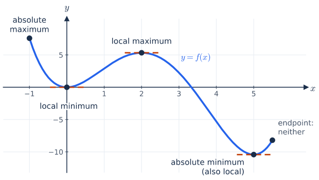
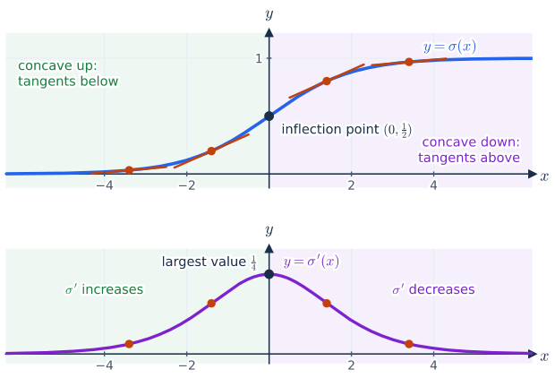
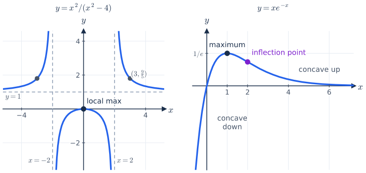
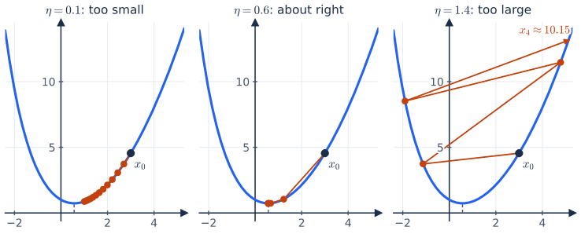

Use derivatives to find the largest and smallest values of a function, to see where its graph rises, falls and bends, and to solve optimisation problems from geometry, physics and economics. You will prove the Mean Value Theorem and the tests that rest on it, sketch graphs from their derivatives, and minimise a function the way machine learning does, by gradient descent.
⏱ 270 minYou need: Modules 1 to 7, in particular the Intermediate and Extreme Value Theorems and asymptotes (Module 3), the rules of differentiation (Modules 4 to 6) and linearisation (Module 7)
In this module you will
Find the absolute extreme values of a continuous function on a closed interval with the closed interval method
Prove Rolle’s theorem and the Mean Value Theorem, and use them to prove the tests for increasing and constant functions
Classify critical numbers with the first and second derivative tests, and find intervals of concavity and inflection points
Sketch a graph from its domain, intercepts, symmetry, asymptotes and the signs of its first and second derivatives
Solve optimisation problems, and justify that the answer is an absolute maximum or minimum
Minimise a function by gradient descent, and explain how the step size decides whether it converges
1
Maximum and minimum values
Many questions ask for a best value. What shape of can holds a given volume with the least metal? Which path does light take between two points? How many units should a factory make to keep the cost of each unit as low as possible? Which setting of a machine-learning model makes its error smallest? Each question asks for the largest or the smallest value of a function, and derivatives answer it. Example 4.8 found the horizontal tangents of a graph by solving f′(x)=0. This module shows why that finds the peaks and the valleys, and what the signs of f′ and f′′ say about the whole shape of a graph.
Figure 8.1 shows a function on the interval [−1,5.5]. Its highest point is at the left end; its lowest point is at x=5, where the tangent is horizontal. In between, the peak at x=2 and the valley at x=0 are the highest and lowest points near them, but not of the whole graph; there too the tangent is horizontal.

Figure 8.1
The graph of f(x)=41x4−37x3+5x2 on [−1,5.5]. The largest value is at the endpoint x=−1, the smallest at x=5; the peak at x=2 and the valley at x=0 are only local. At the three points inside the interval the tangent (dashed) is horizontal; at the endpoints it need not be.
Definition 8.1Absolute and local extrema
Let c be a number in the domain D of a function f.
f(c) is the absolute maximum value of f if f(c)≥f(x) for every x in D, and the absolute minimum value if f(c)≤f(x) for every x in D.
f(c) is a local maximum value of f if f(c)≥f(x) for every x in some open interval that contains c and lies in D, and a local minimum value if f(c)≤f(x) for every x in such an interval.
Maximum and minimum values are extreme values, or extrema (singular extremum). The absolute maximum value of fon an interval I is the absolute maximum value of f with its domain cut down to I, and similarly for the others.
Absolute extrema are also called global. The maximum value on an interval of Module 3 is the absolute maximum on that interval. “Local” means “compared with the points on both sides”, so in this series an endpoint of the domain is never a local extremum; some books allow it, so check the convention when you read elsewhere.
Some examples. x2 has the absolute minimum value 0, at 0, which is also a local minimum; it has no maximum value. x3 has no extremum at all: every interval around a number c contains points where x3 is larger than c3 and points where it is smaller. cosx has the absolute maximum value 1, at x=0,±2π,±4π,…, and the absolute minimum value −1, at x=±π,±3π,…; these are local extrema too. In Figure 8.1, the absolute maximum value is f(−1)=1291≈7.58, which is not a local maximum, since −1 is an endpoint; f(5)=−12125≈−10.42 is the absolute minimum and a local minimum; f(2)=316 is a local maximum and f(0)=0 a local minimum.
Every local extremum in Figure 8.1 sits where the tangent is horizontal. That is no accident.
Theorem 8.1Fermat’s theorem
If f has a local maximum or a local minimum at c, and f′(c) exists, then f′(c)=0.
Proof
Suppose first that f(c) is a local maximum value: f(x)≤f(c) for every x in an open interval around c. For every h=0 small enough that c+h lies in that interval, f(c+h)−f(c)≤0, so the difference quotient
hf(c+h)−f(c)
is ≤0 when h>0 and ≥0 when h<0. As h→0 it tends to f′(c). If f′(c) were positive, then for all small enough h the quotients would lie within f′(c)/2 of f′(c), so they would be positive; but they are not, for h>0. If f′(c) were negative, the quotients with small h<0 would be negative, which they are not either. So f′(c)=0. If f(c) is a local minimum value, −f has a local maximum at c, and the first part gives −f′(c)=0.
∎
Watch out
Fermat’s theorem says only this: at a local extremum where f′ exists, f′=0. It does not work backwards, and it says nothing where its hypotheses fail.
A horizontal tangent without an extremum. For f(x)=x3,f′(0)=0, but there is no extremum at 0, as above.
An extremum without a derivative.∣x∣ has its absolute minimum at 0, where it has no derivative (Module 4).
An extremum at an endpoint. On [0,1],f(x)=x has its absolute maximum at 1, where the slope is 1. An endpoint is not a local extremum, so the theorem does not apply there.
So the candidates for local extrema are the points where f′=0 and the points where f′ does not exist.
Definition 8.2Critical number
A critical number of f is a number c in the domain of f at which f′(c)=0 or f′(c) does not exist.
Some books say critical point. In these words, Fermat’s theorem says: every local extremum is at a critical number. Not every critical number gives an extremum (x3 at 0 does not), so the critical numbers are only the candidates.
Example 8.1Critical numbers✓ Checked
Find the critical numbers of (a) f(x)=2x3−3x2−12x+1 and (b) g(x)=x2/3(x−5), where x2/3=(3x)2 with the real cube root, as in Module 4.
(a)f is a polynomial, differentiable everywhere, so its critical numbers are the solutions of f′(x)=0:
f′(x)=6x2−6x−12=6(x2−x−2)=6(x−2)(x+1).
The critical numbers are −1 and 2.
(b) Multiply out, g(x)=x5/3−5x2/3, and use the power rule for real exponents (Module 6), which holds for powers of the real cube root at every x=0:
(To factor, write x2/3=x−1/3⋅x.) So g′(x)=0 at x=2. At 0, g is defined, g(0)=0, but g′(0) does not exist: the difference quotient
hg(h)−g(0)=hh2/3(h−5)=3hh−5
tends to −∞ as h→0+ and to ∞ as h→0−: a cusp like that of x2/3 in Module 4, but pointing upwards. The critical numbers of g are 0 and 2.
The closed interval method
The Extreme Value Theorem of Module 3 promised that a function continuous on a closed interval [a,b] has an absolute maximum value and an absolute minimum value there. Fermat’s theorem says where to look for them.
Theorem 8.2The closed interval method
Let f be continuous on a closed interval [a,b]. Then f has an absolute maximum value and an absolute minimum value on [a,b], and each of them is a value of f at an endpoint, a or b, or at a critical number of f in (a,b).
Proof
By the Extreme Value Theorem, f takes its absolute maximum value on [a,b] at some c in [a,b]. If c is a or b, there is nothing more to prove. Otherwise a<c<b, and f(c)≥f(x) for every x in the open interval (a,b), which contains c, so f(c) is a local maximum value. If f′(c) does not exist, c is a critical number; if it exists, it is 0 by Fermat’s theorem, and c is a critical number again. The same argument works for the minimum.
∎
Key idea
The closed interval method. To find the absolute maximum and minimum values of a continuous function f on [a,b]:
Find the critical numbers of f in (a,b).
Evaluate f at each of them, and at a and b.
The largest of these values is the absolute maximum value; the smallest is the absolute minimum value.
No test of the critical numbers is needed: you compare a short list of numbers.
Example 8.2The closed interval method✓ Checked
Find the absolute maximum and minimum values of (a) f(x)=2x3−3x2−12x+1 on [−2,3] and (b) g(x)=x2/3(x−5) on [−1,4], the functions of Example 8.1.
(a)f is a polynomial, so it is continuous, and both of its critical numbers, −1 and 2, lie in (−2,3). The values at them and at the endpoints:
x
−2
−1
2
3
f(x)
−3
8
−19
−8
For instance f(−1)=−2−3+12+1=8. The absolute maximum value is 8, at x=−1, and the absolute minimum value is −19, at x=2; here both are inside the interval.
(b) The real cube root is continuous everywhere (Module 3), so g is continuous on [−1,4], and both of its critical numbers, 0 and 2, lie in (−1,4). Since (−1)2/3=(3−1)2=(−1)2=1,42/3=316 and 22/3=34:
x
−1
0
2
4
g(x)
−6
0
−334≈−4.762
−316≈−2.520
The absolute maximum value is 0, at the cusp x=0, where g′ does not exist; the absolute minimum value is −6, at the endpoint x=−1. Solving g′(x)=0 alone would have found neither.
Watch out
Three slips with the closed interval method. Forgetting the endpoints: the minimum in Example 8.2(b) is at one. Forgetting the points where f′ does not exist: the maximum there is at one. And using critical numbers outside the interval: on [0,3] the function of part (a) has only the critical number 2, its values f(0)=1,f(2)=−19 and f(3)=−8 give the maximum value 1, and the number f(−1)=8 is not a value of f on [0,3] at all. Finally, the method needs a function continuous on a closed interval. 1/x is not even defined at 0, which lies in [−1,1], and it has no maximum value there: 1/x→∞ as x→0+.
Compute itThe closed interval method with SymPy
sp.solve(expr, x) returns a list of the solutions of the equation expr=0. With it, the closed interval method for Example 8.2(a) takes a few lines:
Python
import sympy as sp
x = sp.symbols('x')
f = 2*x**3 - 3*x**2 - 12*x + 1
crit = sp.solve(sp.diff(f, x), x) # where f'(x) = 0print(crit)
for c in [-2] + crit + [3]: # the critical numbers and the endpointsprint(c, f.subs(x, c))
Output
[-1, 2]
-2 -3
-1 8
2 -19
3 -8
Both critical numbers lie in (−2,3); in general, keep only those in the interval. Now part (b). Python, and SymPy too, take x2/3 of a negative number to be complex, as Section 1.7 showed for (−8)1/3, so write x2/3 as sp.cbrt(x**2), the cube root of x2≥0, which is real for every x:
5*(x - 2)*(x**2)**(1/3)/(3*x)
[2] nan
3.0 - 5.19615242270663*I -6
SymPy’s derivative looks different from Example 8.1, but for x=0,(x2)1/3/x=1/3x, so it is 33x5(x−2).solve finds the zero 2 of g′ but not the critical number 0, where g′ does not exist; substituting 0 gives nan. Look for the points where f′ is undefined yourself. The last line shows the trap: x**sp.Rational(2, 3) at −1 is the complex number 3−5.196i, not g(−1)=−6.
2
The Mean Value Theorem
On some roads, speed is checked by average speed cameras. One camera records the time at which a car passes it, a second camera a known distance further on does the same, and the car’s average speed is the distance divided by the time. Suppose, hypothetically, that the cameras are 5 km apart, the limit is 80 km/h, and a car passes the second camera 3 minutes after the first. Its average speed is
201 h5 km=100 km/h.
Its driver may protest that no camera saw them at 100 km/h. But at some instant between the cameras the speedometer did show exactly 100 km/h. The theorem that guarantees it, the Mean Value Theorem, connects an average rate of change with an instantaneous one, and it is the key to the rest of this module. Its special case comes first.
Theorem 8.3Rolle’s theorem
Let f be continuous on [a,b] and differentiable on (a,b), with f(a)=f(b). Then there is a number c in (a,b) with f′(c)=0.
Proof
By the Extreme Value Theorem, f has an absolute maximum value and an absolute minimum value on [a,b]. If both are taken at the endpoints, they are equal, since f(a)=f(b); then the largest and the smallest values of f on [a,b] are the same number, f is constant, and f′(c)=0 for every c in (a,b). Otherwise one of them is taken at a point c inside the interval. As in the proof of Theorem 8.2, f(c) is then a local extremum; f′(c) exists, because f is differentiable on (a,b); so f′(c)=0 by Fermat’s theorem.
∎
In pictures (Figure 8.2, left): a smooth graph that starts and ends at the same height must turn round somewhere in between, and where it turns, its tangent is horizontal.
Figure 8.2
Left: Rolle’s theorem for f(x)=x3−3x on [a,b]=[−2,1], where f(a)=f(b)=−2: the tangent at c=−1 is horizontal. Right: the Mean Value Theorem for the same function on [−2,2]: the secant from (−2,−2) to (2,2) has slope 1, and so have the tangents at c1=−2/3 and c2=2/3. The Mean Value Theorem is Rolle’s theorem tilted: the secant takes the place of the horizontal segment, and the tangents parallel to it the place of the horizontal tangent.
Each hypothesis is needed. Without continuity on the closed interval: f(x)=x for 0≤x<1 with f(1)=0 has f(0)=f(1), but f′(x)=1 on (0,1). Without differentiability: ∣x∣ on [−1,1] has equal values at the ends, but its derivative is −1 or 1 wherever it exists. Without f(a)=f(b):x on [0,1] has slope 1 everywhere.
Example 8.3Exactly one root✓ Checked
Show that the equation x5+3x−1=0 has exactly one real solution.
Let f(x)=x5+3x−1, a polynomial, so continuous and differentiable everywhere.
At least one.f(0)=−1<0 and f(1)=3>0, so by the Intermediate Value Theorem (Module 3) there is a solution between 0 and 1.
At most one. Suppose there were two, r<s, with f(r)=f(s)=0. By Rolle’s theorem on [r,s] there would be a c between them with f′(c)=0. But f′(x)=5x4+3≥3 for every x, so f′ is never 0. So there is exactly one solution; Newton’s method (Module 7) gives x≈0.33199.
Now tilt the picture. In Figure 8.2, right, the ends of the graph are at different heights, and the secant line joining them has slope 1. Somewhere in between, at c1 and at c2, the tangent is parallel to the secant.
Theorem 8.4The Mean Value Theorem
Let f be continuous on [a,b] and differentiable on (a,b). Then there is a number c in (a,b) with
f′(c)=b−af(b)−f(a),
that is, f(b)−f(a)=f′(c)(b−a).
Proof
Let m=b−af(b)−f(a), the slope of the secant line, and let
h(x)=f(x)−(f(a)+m(x−a)),
the height of the graph above the secant line. Like f,h is continuous on [a,b] and differentiable on (a,b), because it is f minus a linear function. At the ends, h(a)=0 and h(b)=f(b)−f(a)−m(b−a)=0. By Rolle’s theorem there is a c in (a,b) with h′(c)=0. Since h′(c)=f′(c)−m, this says f′(c)=m.
∎
The mean in the name is the average: the average rate of change of f over [a,b] equals its instantaneous rate of change at some point inside.
Example 8.4Average speed cameras✓ Checked
Prove the claim about the car that passed the two cameras, 5 km apart, 3 minutes apart.
Measure time t in hours from the moment the car passes the first camera, and let s(t) be the distance in kilometres that it has travelled by then. So s(0)=0 and s(201)=5. A car does not jump, and its velocity s′(t) exists at every instant (it is what the speedometer shows), so s is continuous on [0,201] and differentiable on (0,201). By the Mean Value Theorem there is a time c between 0 and 201 with
s′(c)=201−0s(201)−s(0)=1/205=100 km/h.
At that instant the car was travelling at 100 km/h, 20 km/h over the limit. The theorem does not say when; it says that the instant exists.
Watch out
The Mean Value Theorem says that a suitable c exists, not where it is, and there may be several: two in Figure 8.2. And it needs its hypotheses. On [−1,2],∣x∣ has secant slope 2−(−1)2−1=31, but its derivative is −1 or 1 wherever it exists, never 31:∣x∣ is not differentiable at 0, inside the interval.
Consequences
The Mean Value Theorem turns information about f′ into information about f. The first consequence: a function whose derivative is 0 everywhere on an interval does not change. Read as a statement about motion, it says that an object whose velocity is 0 throughout a time interval does not move; but even this needs a proof, and the proof needs the Mean Value Theorem.
Theorem 8.5Functions with zero derivative
If f′(x)=0 for every x in an open interval I, then f is constant on I.
Proof
Let x1<x2 be two numbers in I. Since f is differentiable on I, it is continuous on [x1,x2] (Theorem 4.1) and differentiable on (x1,x2). By the Mean Value Theorem, f(x2)−f(x1)=f′(c)(x2−x1) for some c between them, and f′(c)=0. So f(x1)=f(x2): any two values of f on I are equal.
∎
Theorem 8.6Functions with equal derivatives
If f′(x)=g′(x) for every x in an open interval I, then f−g is constant on I: there is a number C with f(x)=g(x)+C for every x in I.
Proof
(f−g)′=f′−g′=0 on I, so f−g is constant on I by Theorem 8.5.
∎
So two functions with the same derivative on an interval differ by a constant: their graphs are vertical shifts of each other. Module 10 builds on this; it is why every antiderivative ends in “+C”.
Example 8.5An identity from derivatives✓ Checked
Show that arcsinx+arccosx=2π for every x in [−1,1].
Let F(x)=arcsinx+arccosx. For −1<x<1, the derivatives of Module 6 give
F′(x)=1−x21−1−x21=0,
so by Theorem 8.5, F is constant on (−1,1). Its value at 0 is 0+2π, so F(x)=2π for −1<x<1. At the ends, F(1)=2π+0 and F(−1)=−2π+π=2π. So F(x)=2π on all of [−1,1]. Module 6 proved the same identity from the addition formula; here a derivative of 0 proves it.
Watch out
The interval matters. Module 6 found that arctanx+arctanx1 has derivative 0 at every x=0, yet it equals 2π for x>0 and −2π for x<0. Its domain, (−∞,0)∪(0,∞), is two intervals, and Theorem 8.5 applies to each one separately, with a constant of its own.
Going deeperCauchy’s mean value theorem and the proof of L’Hôpital’s rule
Module 7 stated L’Hôpital’s rule in general, proved it only in its simple form, and promised the general proof here. It rests on a mean value theorem for two functions at once.
Theorem 8.7Cauchy’s mean value theorem
Let f and g be continuous on [a,b] and differentiable on (a,b). Then there is a number c in (a,b) with
(f(b)−f(a))g′(c)=(g(b)−g(a))f′(c).
If also g′(x)=0 for every x in (a,b), then g(b)=g(a), and
g(b)−g(a)f(b)−f(a)=g′(c)f′(c).
Proof
Let h(x)=(f(b)−f(a))g(x)−(g(b)−g(a))f(x). It is continuous on [a,b] and differentiable on (a,b), and multiplying out shows that h(a)=f(b)g(a)−f(a)g(b)=h(b). By Rolle’s theorem, h′(c)=0 for some c in (a,b), which is the first equation. If g′=0 on (a,b), then g(b)=g(a), since otherwise Rolle’s theorem would give a zero of g′; so you may divide by (g(b)−g(a))g′(c).
∎
With g(x)=x it is the Mean Value Theorem. Recall the general rule, as Theorem 7.5 states it: let f and g be differentiable on an open interval I containing a, except possibly at a, with g′(x)=0 for x=a in I; if f(x)/g(x) has the form 0/0 or ∞/∞ as x→a, and f′(x)/g′(x)→L, a real number or ±∞, then f(x)/g(x)→L; and the same holds for one-sided limits and for x→±∞.
Proof of L’Hôpital’s rule
The form 0/0, from the right. Suppose that f and g are differentiable on (a,b),g′=0 there, f(x)→0 and g(x)→0 as x→a+, and f′(x)/g′(x)→L. Give f and g the values f(a)=g(a)=0; this changes no limit as x→a+, and makes f and g continuous on [a,y] for every y in (a,b). By Cauchy’s theorem on [a,y], there is a cy with a<cy<y and
g(y)f(y)=g(y)−g(a)f(y)−f(a)=g′(cy)f′(cy).
Let L be a real number and ε>0. There is a δ>0, with a+δ≤b, such that ∣f′(t)/g′(t)−L∣<ε whenever a<t<a+δ. For a<y<a+δ, the number cy lies in (a,a+δ) too, so ∣f(y)/g(y)−L∣<ε; that is, f(y)/g(y)→L as y→a+. If L=∞, the same argument with “f′(t)/g′(t)>M” in place of “∣f′(t)/g′(t)−L∣<ε”, for an arbitrary M, shows f(y)/g(y)>M for a<y<a+δ;L=−∞ is the same.
Other directions. From the left, use [y,a] in the same way. A two-sided limit is a pair of one-sided limits. For x→∞, with I=(b,∞), where you may take b>0 by shrinking I, put F(t)=f(1/t) and G(t)=g(1/t) for 0<t<1/b. By the chain rule F′(t)=−f′(1/t)/t2 and G′(t)=−g′(1/t)/t2=0, so F′(t)/G′(t)=f′(1/t)/g′(1/t)→L as t→0+, and the case above gives F(t)/G(t)→L, which says that f(x)/g(x)→L as x→∞. For x→−∞ use t=−1/x.
The form ∞/∞, from the right, with L real. Now ∣g(x)∣→∞ as x→a+. Let 0<ε<1, choose δ as before, and fix y=a+δ (shrinking δ first if necessary, so that y<b). For a<x<y, Cauchy’s theorem on [x,y] gives a c between x and y with
Q=g(x)−g(y)f(x)−f(y)=g′(c)f′(c),
so ∣Q−L∣<ε and ∣Q∣<∣L∣+1. For x so close to a that g(x)=0, solving f(x)=Q(g(x)−g(y))+f(y) for the ratio gives
g(x)f(x)−L=(Q−L)−Qg(x)g(y)+g(x)f(y).
Since y is fixed and ∣g(x)∣→∞, the last two fractions tend to 0 as x→a+; for x close enough to a each is smaller than ε in size, and then ∣f(x)/g(x)−L∣<ε+(∣L∣+1)ε+ε=(∣L∣+3)ε. As ε is arbitrary, f(x)/g(x)→L. If L=∞, take an arbitrary M>0 and choose y in (a,b) so that f′(t)/g′(t)>2M for a<t<y; then Q>2M for every x in (a,y). For x close enough to a, also 1−g(y)/g(x)>21 and ∣f(y)/g(x)∣<1, so f(x)/g(x)=Q(1−g(y)/g(x))+f(y)/g(x)>M−1; as M is arbitrary, f(x)/g(x)→∞. If L=−∞, apply this to −f. The other directions follow as for 0/0.
∎
The proof of the form ∞/∞ used only ∣g(x)∣→∞, not f(x)→±∞: the rule holds whenever ∣g(x)∣→∞ and f′/g′ has a limit.
3
Increasing and decreasing functions
Module 4 observed that where a graph rises its tangents slope upwards, and promised a partial converse: where f′>0 on an interval, f rises. The Mean Value Theorem delivers it.
Definition 8.3Increasing and decreasing functions
A function f is increasing on an interval I if f(x1)<f(x2) whenever x1<x2 in I, and decreasing on I if f(x1)>f(x2) whenever x1<x2 in I.
These are the definitions of Section 4.3. Some books call them strictly increasing and decreasing, and use “increasing” for the weaker f(x1)≤f(x2); this series follows Module 4.
Theorem 8.8The increasing/decreasing test
Let f be continuous on an interval I and differentiable at every point of I that is not an endpoint of I.
If f′(x)>0 at every such point, f is increasing on I.
If f′(x)<0 at every such point, f is decreasing on I.
Proof
Let x1<x2 be in I. Then f is continuous on [x1,x2] and differentiable on (x1,x2), whose points are not endpoints of I. By the Mean Value Theorem, f(x2)−f(x1)=f′(c)(x2−x1) for some c between x1 and x2. If f′>0, both factors are positive, so f(x2)>f(x1). If f′<0, the product is negative, so f(x2)<f(x1).
∎
The endpoints may belong to I:x2 is increasing on [0,∞), since its derivative 2x is positive for x>0, although it is 0 at the endpoint 0. A single zero of f′ inside an interval does not spoil the conclusion either: x3 is increasing on (−∞,0] and on [0,∞), so for x1<0<x2,x13<0<x23, and x3 is increasing on all of R, although its derivative is 0 at 0. The same argument covers any finite number of zeros.
To use the test you need the intervals on which f′ has one sign. If f′ is continuous on an interval and never 0 there, it cannot change sign there, because by the Intermediate Value Theorem a change of sign would need a zero in between. Every derivative in this module is continuous wherever it exists, so it can change sign only at critical numbers and at points outside the domain of f. Mark those points on the number line; they cut it into intervals, and the sign of f′ at one test point of each interval is its sign on the whole interval. A table of these signs is a sign chart.
Good to know
Not every derivative is continuous. The function x2sin(1/x) of Exercise 4.11, with the value 0 at 0, has a derivative at every point; but for x=0 its derivative is 2xsin(1/x)−cos(1/x), which keeps swinging between values near −1 and near 1 as x→0, so it is not continuous at 0.
Example 8.6Where a cubic rises and falls✓ Checked
Find where g(x)=2x3−9x2+12x−4 is increasing and where it is decreasing.
Example 4.8 found g′(x)=6x2−18x+12=6(x−1)(x−2), which is continuous and 0 only at 1 and 2. The sign chart reads the sign of g′ from the signs of its factors:
Interval
x−1
x−2
g′(x)
g
x<1
−
−
+
increasing
1<x<2
+
−
−
decreasing
x>2
+
+
+
increasing
Since g is continuous, Theorem 8.8 lets you include the endpoints: g is increasing on (−∞,1] and on [2,∞), and decreasing on [1,2]. In particular the graph falls all the way from (1,1) to (2,0), as Module 4 promised.
The first derivative test
In Example 8.6 the graph rises to x=1 and then falls: so g(1) is a local maximum. Then it falls to x=2 and rises again: g(2) is a local minimum. That reasoning works at every critical number.
Theorem 8.9The first derivative test
Let c be a critical number of f, let f be continuous at c, and let f be differentiable on an open interval around c, except possibly at c itself.
If f′ changes from positive to negative at c (that is, f′(x)>0 for x<c and f′(x)<0 for x>c, in that interval), then f(c) is a local maximum value.
If f′ changes from negative to positive at c, then f(c) is a local minimum value.
If f′ has the same sign on both sides of c, then f has no local extremum at c.
Proof
Let the interval be (p,q). Suppose f′>0 on (p,c) and f′<0 on (c,q). On (p,c],f is continuous (it is differentiable on (p,c) and continuous at c), so by Theorem 8.8 it is increasing there: f(x)<f(c) for p<x<c. In the same way f is decreasing on [c,q):f(x)<f(c) for c<x<q. So f(c)≥f(x) on all of (p,q), a local maximum. The second case is the same with the inequalities reversed. In the third, if f′>0 on both sides, f is increasing on (p,c] and on [c,q), so for p<x<c<y<q,f(x)<f(c)<f(y): every open interval around c contains points where f is smaller than f(c) and points where it is larger, and f(c) is not an extremum. The case f′<0 is the same.
∎
Example 8.7A local maximum at a cusp✓ Checked
Find the local extreme values of g(x)=x2/3(x−5), the function of Examples 8.1 and 8.2.
Its critical numbers are 0 and 2, and g′(x)=33x5(x−2) for x=0. The cube root has the sign of x:
Interval
x−2
3x
g′(x)
g
x<0
−
−
+
increasing
0<x<2
−
+
−
decreasing
x>2
+
+
+
increasing
g is continuous at 0, and g′ changes from positive to negative there, so g(0)=0 is a local maximum value, at a cusp where g′ does not exist. At 2, g′ changes from negative to positive, so g(2)=−334≈−4.762 is a local minimum value.
The same reasoning proves inequalities that are hard to prove by algebra.
Example 8.8An inequality for ex✓ Checked
Show that ex≥1+x for every real x, with equality only at x=0.
Let f(x)=ex−1−x. Then f′(x)=ex−1. Since ex is increasing and e0=1,f′(x)<0 for x<0 and f′(x)>0 for x>0. By Theorem 8.8, f is decreasing on (−∞,0] and increasing on [0,∞), so f(x)>f(0)=0 for every x=0. That is, ex>1+x for x=0, and e0=1+0. Geometrically, the graph of ex lies above its tangent line y=1+x at 0, the linearisation of Module 7; Section 8.4 explains why.
Watch out
Two slips with sign charts. First, f′ can also change sign at a point outside the domain, such as a vertical asymptote, and there is no extremum there: f(x)=1/x2 has f′(x)=−2/x3, positive for x<0 and negative for x>0, but f has no maximum, since 0 is not in its domain and f(x)→∞ as x→0. Put such points on the chart, but never call them extrema. Second, “increasing on (−∞,0) and on (0,∞)” is not “increasing on (−∞,0)∪(0,∞)”: −1/x is increasing on each interval, yet −1/(−1)=1 is larger than −1/1=−1.
4
Concavity
The sign of f′ says whether a graph rises or falls; it does not say how it bends. Both halves of the graph in Figure 8.3 rise, but the left half bends upwards, like the inside of a bowl, and the right half bends downwards, like a dome. The curve is the sigmoid function of machine learning,
σ(x)=1+e−x1,
read “sigma of x”, which turns any real number into a number between 0 and 1. By the chain rule, σ′(x)=(1+e−x)2e−x. Here are its slopes:
x
−3
−2
−1
0
1
2
3
σ′(x)
0.04518
0.1050
0.1966
0.25
0.1966
0.1050
0.04518
From left to right the slopes increase up to x=0 and then decrease. Where the slopes increase, the curve bends upwards and lies above its tangent lines; where they decrease, it bends downwards and lies below them (Figure 8.3).

Figure 8.3
Top: the sigmoid y=σ(x) with tangent lines at four points. For x<0 (green) the graph is concave up and lies above its tangents; for x>0 (purple) it is concave down and lies below them. The concavity changes at the inflection point (0,21). Bottom: the slopes σ′(x) increase for x<0 and decrease for x>0; they are largest, 41, at the inflection point.
Definition 8.4Concavity
Let f be differentiable on an open interval I. The graph of f is concave up on I if f′ is increasing on I, and concave down on I if f′ is decreasing on I.
In optimisation and machine learning a function whose graph is concave up is called convex, and one whose graph is concave down is called concave. Those two words are a little broader: they also allow straight stretches, so a straight line counts as both convex and concave. Since f′′ is the derivative of f′, Theorem 8.8 applied to f′ gives a test.
Theorem 8.10The concavity test
If f′′(x)>0 for every x in an open interval I, the graph of f is concave up on I. If f′′(x)<0 for every x in I, it is concave down on I.
Proof
f′ is differentiable on I, with derivative f′′, so it is continuous on I; by Theorem 8.8 applied to f′, it is increasing on I if f′′>0 and decreasing if f′′<0.
∎
The tangent lines of Figure 8.3 behave as they do for every function.
Theorem 8.11Concavity and tangent lines
If the graph of f is concave up on an open interval I, then for every c in I it lies above its tangent line at c:
f(x)>f(c)+f′(c)(x−c)
for every x=c in I. If it is concave down on I, it lies below its tangent lines. In particular, if the graph is concave up on I and f′(c)=0, then f(c) is the absolute minimum value of f on I, taken only at c; if it is concave down and f′(c)=0,f(c) is the absolute maximum value.
Proof
Let x>c be in I. By the Mean Value Theorem, f(x)−f(c)=f′(t)(x−c) for some t in (c,x). Since f′ is increasing and t>c,f′(t)>f′(c); multiplying by x−c>0 gives f(x)−f(c)>f′(c)(x−c). If x<c, the Mean Value Theorem on [x,c] gives f(c)−f(x)=f′(t)(c−x) with x<t<c, so f′(t)<f′(c), and f(c)−f(x)<f′(c)(c−x), which rearranges to the same inequality. When f′(c)=0 the tangent line is y=f(c), so f(x)>f(c) for every other x in I. The concave-down case is the same with the inequalities reversed.
∎
The points where the concavity changes have a name.
Definition 8.5Inflection point
A point (c,f(c)) of the graph of f is an inflection point if f is continuous at c and the graph changes concavity at c: for some δ>0 it is concave up on (c−δ,c) and concave down on (c,c+δ), or concave down and then concave up.
Theorem 8.12The second derivative at an inflection point
If (c,f(c)) is an inflection point and f′′(c) exists, then f′′(c)=0.
Proof
Say the graph is concave up on (c−δ,c) and concave down on (c,c+δ), so that f′ is increasing on the first interval and decreasing on the second. Since f′′(c) exists, f′ is differentiable at c, hence continuous there. For c−δ<x<y<c,f′(x)<f′(y), and letting y→c gives f′(x)≤f′(c); in the same way f′(x)≤f′(c) for c<x<c+δ. So f′ has a local maximum at c, and by Fermat’s theorem, applied to f′, its derivative there is 0: f′′(c)=0. The other case gives a local minimum of f′, with the same conclusion.
∎
So the candidates for inflection points are the points where f′′=0 and the points where f′′ does not exist, and a sign chart of f′′ decides. The proof also shows that the slope f′ has a local maximum or minimum at an inflection point where f′′ exists: compared with its neighbourhood, the graph is steepest there, or least steep.
Example 8.9The bend of the sigmoid✓ Checked
For σ(x)=1+e−x1, show that σ′=σ(1−σ), find σ′′, the intervals of concavity and the inflection point, and the largest value of σ′.
Differentiate σ′=σ−σ2, using the chain rule on σ2:
σ′′=σ′−2σσ′=σ′(1−2σ).
Since σ′>0,σ′′ has the sign of 1−2σ. Now 1−2σ(x)>0 exactly when σ(x)<21, that is, when 1+e−x>2, that is, when e−x>1, that is, when x<0. So σ′′>0 for x<0 and σ′′<0 for x>0: the graph is concave up on (−∞,0) and concave down on (0,∞), and (0,σ(0))=(0,21) is an inflection point. Finally, σ′ is increasing on (−∞,0] and decreasing on [0,∞) (Theorem 8.8 applied to σ′, whose derivative is σ′′), so its absolute maximum value is σ′(0)=41: the sigmoid is steepest at its inflection point, as the table above showed.
In machine learning, σ(x) turns a score x into a probability. Its slope is at most 41 and very small when ∣x∣ is large, which matters when a model is trained by following slopes, as in Section 8.7.
Watch out
Three slips with inflection points. f′′(c)=0 is not enough: x4 has f′′(x)=12x2, which is 0 at 0 but positive on both sides, so the graph is concave up on both sides and has no inflection point. f′′ need not exist at an inflection point: x1/3 has f′′(x)=−92x−5/3, positive for x<0 and negative for x>0, so the origin is an inflection point (with a vertical tangent) although f′′(0) does not exist. A change of concavity at a point outside the domain is not an inflection point: 1/x is concave down for x<0 and concave up for x>0, but has no point at 0. And concave up is not increasing: e−x is concave up and decreasing.
The second derivative test
At a critical number where f′(c)=0, the tangent is horizontal. If the graph is concave up there, it lies above the horizontal tangent near c, a valley; if it is concave down, it lies below, a peak. That is the idea of a second test, which needs no sign chart of f′.
Theorem 8.13The second derivative test
Suppose that f′(c)=0 and f′′(c) exists.
If f′′(c)>0,f(c) is a local minimum value.
If f′′(c)<0,f(c) is a local maximum value.
If f′′(c)=0, the test gives no information.
Proof
Suppose f′′(c)>0. Since f′(c)=0,
f′′(c)=x→climx−cf′(x)−f′(c)=x→climx−cf′(x)>0.
So, as in the proof of Fermat’s theorem, there is a δ>0 such that x−cf′(x)>0 whenever 0<∣x−c∣<δ: then f′(x)<0 for c−δ<x<c and f′(x)>0 for c<x<c+δ.f is differentiable near c (as f′′(c) exists), so the first derivative test gives a local minimum. If f′′(c)<0, the signs reverse and give a local maximum. For the third case, the three functions x4,−x4 and x3 all have f′(0)=f′′(0)=0, and they have a minimum, a maximum and neither at 0.
∎
Example 8.10When the second derivative test fails✓ Checked
Find the local extrema and the inflection points of f(x)=x4−4x3.
Extrema. The critical numbers are 0 and 3. At 3, f′′(3)=108−72=36>0, so f(3)=81−108=−27 is a local minimum value. At 0, f′′(0)=0, and the test says nothing. Use the first derivative test instead: for x<0 and for 0<x<3,4x2>0 and x−3<0, so f′(x)<0 on both sides of 0. There is no extremum at 0: the graph flattens out for a moment as it falls. In fact f is decreasing on (−∞,3] and increasing on [3,∞), so −27 is the absolute minimum value.
Concavity.f′′(x)=12x(x−2) is positive for x<0, negative for 0<x<2 and positive for x>2. The graph is concave up on (−∞,0), concave down on (0,2) and concave up on (2,∞), with inflection points (0,0) and (2,f(2))=(2,−16). At the origin the graph has a horizontal tangent and an inflection point at once.
Tip
Which test should you use? The second derivative test is quick when f′′ is easy to compute, and it decides most critical numbers where f′(c)=0. The first derivative test decides whenever f′ keeps one sign on each side of c, as it does for every function in this module, even where f′′(c)=0 or f′(c) does not exist. Its sign chart also tells you where f increases and decreases.
5
Curve sketching
A computer draws a graph by plotting many points; it does not tell you which features matter, and it can miss them between its points or outside its window. The derivatives find the features, and with them you can sketch a graph that shows everything important.
Key idea
A checklist for sketching y=f(x).
Domain: where is f defined?
Intercepts: the y-interceptf(0), if 0 is in the domain; the x-intercepts, the solutions of f(x)=0, when you can find them.
Symmetry: is f even, f(−x)=f(x), or odd, f(−x)=−f(x) (Section 1.4)? Is it periodic?
Asymptotes: vertical, horizontal and oblique (Module 3).
Increase and decrease: a sign chart of f′.
Local extrema: the first or the second derivative test.
Concavity and inflection points: a sign chart of f′′.
Sketch: draw the asymptotes, plot the points found, and join them with a curve that rises, falls and bends as the charts say.
Example 8.11Sketching a rational function✓ Checked
Sketch the graph of f(x)=x2−4x2.
Domain.x2−4=0 at x=±2, so the domain is all x=±2.
Intercepts.f(0)=0, and f(x)=0 only when x2=0: the only intercept is the origin.
Symmetry.f(−x)=f(x):f is even, and its graph is symmetric about the y-axis.
Asymptotes. As x→±∞, dividing the top and the bottom by x2 gives f(x)=1−4/x21→1: the line y=1 is a horizontal asymptote. Since f(x)−1=x2−44, which is positive for ∣x∣>2, the graph approaches it from above. As x→2+, the top tends to 4 and the bottom to 0 through positive values, so f(x)→∞; as x→2−,f(x)→−∞. By symmetry, f(x)→∞ as x→−2− and f(x)→−∞ as x→−2+. The lines x=±2 are vertical asymptotes.
Increase and decrease. By the quotient rule (Module 5),
f′(x)=(x2−4)22x(x2−4)−x2⋅2x=(x2−4)2−8x.
The denominator is positive, so f′(x)>0 for x<0 and f′(x)<0 for x>0 (x=±2). So f is increasing on (−∞,−2) and on (−2,0], and decreasing on [0,2) and on (2,∞).
Local extrema. The only critical number is 0, where f′ changes from positive to negative: f(0)=0 is a local maximum value. It is not an absolute maximum, since f(x)→∞ as x→2+.
Concavity. Write f′(x)=−8x(x2−4)−2 and use the product and chain rules:
The top is always positive, so f′′ has the sign of x2−4: the graph is concave up on (−∞,−2) and (2,∞), and concave down on (−2,2). The concavity changes only at ±2, which are not in the domain: no inflection points.
Sketch. Figure 8.4, left: two outer branches above y=1, concave up, falling from the vertical asymptotes towards y=1; a middle branch, concave down, with its peak at the origin and plunging to −∞ at both asymptotes. Two more points help: f(±1)=−31 and f(±3)=59.
Example 8.12Sketching xe−x✓ Checked
Sketch the graph of f(x)=xe−x.
Domain. All real x.
Intercepts.e−x>0, so f(x)=0 only at x=0: the origin.
Symmetry.f(−1)=−e and f(1)=e−1, so f is neither even nor odd.
Asymptotes.f is continuous, so there are no vertical asymptotes. As x→∞,xe−x=exx→0, because exponentials grow faster than powers (Module 7, by L’Hôpital’s rule): the x-axis is a horizontal asymptote on the right. As x→−∞,x→−∞ and e−x→∞, so f(x)→−∞.
Increase and decrease. By the product rule, f′(x)=e−x−xe−x=(1−x)e−x. Since e−x>0,f′ has the sign of 1−x:f is increasing on (−∞,1] and decreasing on [1,∞).
Extrema. So f(1)=e−1=e1≈0.368 is not only a local maximum value but the absolute maximum value: f rises to it and falls after it.
Concavity.f′′(x)=−e−x−(1−x)e−x=(x−2)e−x, negative for x<2 and positive for x>2. The graph is concave down on (−∞,2) and concave up on (2,∞), with an inflection point at (2,2e−2)≈(2,0.271).
Sketch. Figure 8.4, right: rising steeply from −∞ through the origin, peaking at (1,e1), and decaying towards the x-axis, the bend reversing at x=2.

Figure 8.4
The two sketches. Left: y=x2−4x2, with vertical asymptotes x=±2, horizontal asymptote y=1 (dashed), and a local maximum at the origin; it is concave up outside [−2,2] and concave down inside, without inflection points. Right: y=xe−x, with its maximum e1 at x=1 and its inflection point at x=2.
The widget below does the sign charts for you, numerically. Use it to check a sketch, not to replace one: it looks only at its window and at the points of its grid.
Try it
The curve is blue where f is increasing and orange where it is decreasing; the background is green where the graph is concave up and purple where it is concave down. Dots mark the critical numbers, squares the inflection points, and the two charts below the graph give the signs of f′ and f′′. Choose x4−4x3 and compare with Example 8.10: the flat point at 0 is a critical number but not an extremum, and it is also an inflection point. Choose xe−x and compare with Example 8.12. Then type x^2/(x^2 - 4) (Example 8.11), and x^(2/3)(x - 5), the function of Example 8.7 (unlike Python, the widget takes x2/3 with the real cube root, as this series does), and move the point with the slider to read f(x),f′(x) and f′′(x).
Compute itCurve sketching with SymPy
SymPy does the algebra of a sketch. Declare x real, so that solve looks only for real solutions:
These are the derivatives of Example 8.11, with x2−4 factored; f′′=0 has no real solution. solve also solves inequalities, which gives the sign charts:
Python
print(sp.solve(d1 > 0, x))
print(sp.solve(d2 < 0, x))
z = sp.symbols('z') # a symbol with no assumptionsprint(sp.solve(3*z**2 + 4, z))
Read & as “and” and Ne(x, -2) as x=−2:f′>0 for x<0,x=−2, and f′′<0 on (−2,2), as in the example. Without real=True, solve returns complex solutions too: 3z2+4=0 has the solutions ±32i, where i2=−1, which are of no use on a graph.
6
Optimisation problems
An optimisation problem in words becomes a problem about the extreme values of a function. The closed interval method handles a continuous function on a closed interval; many problems, though, live on open or unbounded intervals, such as all lengths r>0. There the next theorem, or Theorem 8.11, shows that a critical number gives the absolute extremum.
Theorem 8.14The first derivative test for absolute extrema
Let f be continuous on an interval I, let c be in I, and let f be differentiable at every point of I except possibly c and the endpoints of I. If f′(x)>0 at every such x<c and f′(x)<0 at every such x>c, then f(c) is the absolute maximum value of f on I, taken only at c. If f′(x)<0 for x<c and f′(x)>0 for x>c,f(c) is the absolute minimum value, taken only at c.
Proof
The points of I that are ≤c form an interval on which f is continuous, and f′>0 at those of them that are not endpoints; by Theorem 8.8, f is increasing there, so f(x)<f(c) for every x<c in I. In the same way f is decreasing on the points of I that are ≥c, so f(x)<f(c) for x>c. So f(x)<f(c) for every x=c in I. The minimum is the same.
∎
Key idea
Solving an optimisation problem.
Read the problem and draw a picture. Name the quantities, with their units.
Write the quantity to be made largest or smallest as a function of the others.
Use the conditions of the problem to make it a function of one variable, and find the interval of values the variable can take.
Find the critical numbers in that interval.
Show that you have the absolute extremum: by the closed interval method if the interval is closed and bounded; otherwise by the sign of the derivative on each side (Theorem 8.14) or by concavity (Theorem 8.11).
Answer the question that was asked, with units, and check that the answer makes sense.
Example 8.13The biggest box from a sheet✓ Checked
Suppose a rectangular sheet of cardboard is 24 cm by 45 cm. Cut a square of side x cm from each corner and fold up the sides to make an open box. Which x gives the largest volume?
The base of the box is (45−2x) by (24−2x) cm and its height is x cm, so its volume is
V(x)=x(24−2x)(45−2x) cm3.
The cuts need x≥0 and 24−2x≥0, so 0≤x≤12 (at the ends the box is flat, with volume 0). Numbers first:
x
1
2
3
4
5
6
7
8
10
12
V(x)
946
1640
2106
2368
2450
2376
2170
1856
1000
0
The best cut seems to be near 5 cm. Now calculus. Expand: V(x)=4x3−138x2+1080x, so
The critical numbers are 5 and 18, and only 5 lies in [0,12]. By the closed interval method, compare V(0)=0,V(5)=5⋅14⋅35=2450 and V(12)=0: the largest volume is 2450 cm³, about 2.45 litres, with cuts of 5 cm, for a box 35 cm by 14 cm by 5 cm deep. The critical number 18 is a value of x for which no box exists.
Example 8.14A can with the least metal✓ Checked
A cylindrical can must hold 330 cm³ (330 ml, a common size for drinks). Which radius r and height h need the least metal, that is, the least surface area, top and bottom included?
The area is A=2πr2+2πrh: two discs and the side, which unrolls into a rectangle of width 2πr and height h. The volume condition πr2h=330 gives h=πr2330, so
A(r)=2πr2+2πr⋅πr2330=2πr2+r660,r>0.
The interval (0,∞) is not closed: no closed interval method. Differentiate:
A′(r)=4πr−r2660=r24πr3−660,
which is 0 when r3=4π660=π165, at r∗=3165/π≈3.745 cm. For r<r∗ the top 4πr3−660 is negative, and for r>r∗ it is positive, so by Theorem 8.14, A(r∗) is the absolute minimum. The height is then
h=πr∗2330=πr∗3330r∗=165330r∗=2r∗≈7.49 cm,
using πr∗3=165, and the area is A(r∗)≈264.4 cm². The best can is exactly as tall as it is wide: its height equals its diameter. The same steps with any volume V in place of 330 give r∗3=V/(2π) and again h=2r∗. Real drinks cans are much taller than they are wide, so their makers weigh other things than the area of the metal.
Example 8.15The closest point on a parabola✓ Checked
Find the point of the parabola y=x2 closest to the point (3,0).
The distance from (x,x2) to (3,0) is (x−3)2+x4. The square root is increasing, so the distance is smallest where its square is smallest, and the square, free of the root, is easier to differentiate:
D(x)=(x−3)2+x4,x real.
D′(x)=2(x−3)+4x3=2(2x3+x−3). Trying small integers, x=1 is a root of 2x3+x−3, and dividing by x−1 gives
D′(x)=2(x−1)(2x2+2x+3).
The quadratic factor has no real root, since its discriminant is 4−24<0, so the only critical number is 1. And D′′(x)=12x2+2>0 everywhere: D is concave up on R, so by Theorem 8.11 its critical number gives the absolute minimum. The closest point is (1,1), at distance D(1)=4+1=5≈2.236. A check: the segment from (3,0) to (1,1) has slope −21, and the tangent to the parabola at (1,1) has slope 2; since 2⋅(−21)=−1, they are perpendicular, as the shortest path to a curve should be.
Example 8.16Snell’s law from the principle of least time✓ Checked
A lifeguard on a beach runs faster than she swims. To reach a swimmer in the sea as fast as possible she should not head straight for him: running a little further along the beach shortens the slow swim. Light faces the same problem when it passes from air into water, where it travels more slowly, and Fermat’s principle says that light takes the path of least time. Find the path.
Put the boundary on the x-axis, the start A=(0,a) above it and the end B=(d,−b) below it, with a,b,d>0. Light crosses the boundary at P=(x,0), travelling at speed v1 from A to P and v2 from P to B. Distance over speed gives the time:
T(x)=v1a2+x2+v2b2+(d−x)2.
By the chain rule,
T′(x)=v1a2+x2x−v2b2+(d−x)2d−x.
Let θ1 be the angle between AP and the vertical, and θ2 the angle between PB and the vertical. For 0<x<d the right triangles give sinθ1=a2+x2x and sinθ2=b2+(d−x)2d−x, so
T′(x)=0⟺v1sinθ1=v2sinθ2.
This is Snell’s law of refraction. Is it a minimum? Differentiating again,
T′′(x)=v1(a2+x2)3/2a2+v2(b2+(d−x)2)3/2b2>0,
so T is concave up on R. Also T′(0)<0<T′(d), so by the Intermediate Value Theorem T′ has a zero between 0 and d, and only one, since T′ is increasing. By Theorem 8.11 that zero gives the absolute minimum of T: the path of least time obeys Snell’s law. With numbers: light travels about 1.33 times as fast in air as in water (the refractive index of water is about 1.33), so take v1/v2=34,a=3,b=4 and d=7. At x=4,sinθ1=54 and sinθ2=53, and 3/54/5=34=v2v1: the light enters the water at (4,0).
Example 8.17The cheapest cost per unit✓ Checked
Suppose that making q units of a product per week costs C(q)=1800+6q+0.02q2 pounds (a made-up cost: a fixed £1800, plus costs that grow faster than the output). How many units minimise the average costA(q)=C(q)/q, the cost per unit?
A(q)=q1800+6+0.02q,q>0.
A′(q)=−q21800+0.02, which is 0 when q2=90000, at q=300. And A′′(q)=q33600>0 for q>0:A is concave up on (0,∞), so by Theorem 8.11, A(300) is the absolute minimum. The cheapest cost per unit is A(300)=6+6+6=18, that is, £18, at 300 units a week.
Economists call the derivative C′(q) the marginal cost: by linear approximation (Module 7), C(q+1)−C(q)≈C′(q), the cost of one more unit. Here C′(q)=6+0.04q, and C′(300)=18: at the best output, the marginal cost equals the average cost. That is no coincidence. By the quotient rule,
A′(q)=q2qC′(q)−C(q),
which is 0 exactly when C′(q)=C(q)/q. While making one more unit costs less than the average, it pulls the average down; once it costs more, it pushes the average up.
Watch out
Three slips in optimisation. Ignoring the interval: in Example 8.13 the critical number 18 has no box, and in a problem on a closed interval the answer may be at an end. Stopping at a critical number: f′(c)=0 does not make f(c) the largest or the smallest value; say which theorem shows it, as the examples do. Answering a different question: if the problem asks for the dimensions of a can, the minimum area alone is not the answer.
7
Gradient descent
Every example so far solved f′(x)=0 by algebra. Often that is impossible: the equation has no formula for its solution, or, in machine learning, f is the error of a model with millions of parameters. Then you can search instead: start somewhere and walk downhill.
Definition 8.6Gradient descent
To minimise a differentiable function f, choose a starting point x0 and a step sizeη>0, and compute
xk+1=xk−ηf′(xk),k=0,1,2,…
The Greek letter η is read “eta”. In machine learning the step size is called the learning rate.
Why does this go downhill? If f′(xk)>0, the graph slopes upwards at xk, and the step moves left; if f′(xk)<0, it slopes downwards, and the step moves right. By the linearisation of Module 7,
which is less than f(xk) when f′(xk)=0, at least when the step is small enough for the approximation to be good. And the steps stop moving exactly at critical numbers: xk+1=xk means f′(xk)=0. How large should η be? A parabola answers that completely.
Example 8.18Gradient descent on a parabola✓ Checked
Let f(x)=2qx2, where q>0 is a constant, so that f′(x)=qx,f′′(x)=q, and the minimum is at x=0. Show that gradient descent gives xk=(1−qη)kx0, and find the step sizes for which xk approaches the minimum.
One step gives xk+1=xk−ηqxk=(1−qη)xk. Every step multiplies by the same factor 1−qη, so after k steps xk=(1−qη)kx0. Powers of a number between −1 and 1 shrink towards 0, and powers of a number beyond ±1 grow without bound. With x0=0:
Step size
Factor 1−qη
The steps
0<η<1/q
between 0 and 1
approach 0 from one side; slowly if η is small
η=1/q
0
land on 0 in one step
1/q<η<2/q
between −1 and 0
zigzag about 0, closing in
η=2/q
−1
bounce between x0 and −x0 for ever
η>2/q
below −1
zigzag outwards: diverge
So gradient descent finds the minimum exactly when 0<η<2/q: the more sharply the parabola curves, the smaller the steps must be.
Near a minimum c where f′′(c)>0, a function behaves much like this parabola, and the same rule applies there.
Key idea
A rule of thumb for the step size. Near a minimum c with f′′(c)>0, the linearisation of f′ at c (Module 7) gives f′(x)≈f′′(c)(x−c), since f′(c)=0. So one step of gradient descent gives
xk+1−c≈(1−ηf′′(c))(xk−c),
the parabola of Example 8.18 with q=f′′(c). Started close to c, gradient descent settles at c when 0<η<2/f′′(c), and fastest when η is near 1/f′′(c). This argument is a rule of thumb, not a proof: the approximation holds only close to c. (When f′′ is continuous near c, the Mean Value Theorem applied to f′ turns it into a proof that the steps converge for 0<η<2/f′′(c).)
Choosing η=1/f′′(xk) afresh at every step turns gradient descent into xk+1=xk−f′(xk)/f′′(xk): Newton’s method (Module 7) for the equation f′(x)=0. It converges fast, but it needs f′′, which for a model with millions of parameters is too expensive to compute; gradient descent needs only f′.
Figure 8.5 tries three step sizes on
f(x)=21x2+e−x.
Here f′(x)=x−e−x and f′′(x)=1+e−x>0, so the graph is concave up and its one critical number, the solution x∗≈0.567143 of x=e−x found by Newton’s method in Module 7, gives the absolute minimum (Theorem 8.11). Since e−x∗=x∗,f′′(x∗)=1+x∗≈1.567: the rule of thumb predicts convergence for η<2/1.567≈1.28, fastest near η≈0.64.

Figure 8.5
Gradient descent on f(x)=21x2+e−x from x0=3; the dashed line marks the minimum at x∗≈0.567. With η=0.1 the steps creep towards it: 12 steps reach only x≈1.004. With η=0.6 the third step is already within 0.01 of it. With η=1.4 the steps jump from side to side of the minimum, further out on each side every time they return to it; the fourth step lands at x4≈10.15.
Compute itGradient descent in Python
The method is a loop of one line. With f′(x)=x−e−x:
Python
import math
defdf(x): # f(x) = x**2/2 + exp(-x)return x - math.exp(-x)
defgradient_descent(x, eta, steps):
xs = [x]
for _ inrange(steps):
x = x - eta*df(x)
xs.append(x)
return xs
for eta in (0.1, 0.6, 1.4):
xs = gradient_descent(3.0, eta, 7)
print(f"eta = {eta}:", " ".join(f"{v:.4g}"for v in xs))
With η=1.4 the next step lands near 3.5×1014, and two steps later math.exp fails with an overflow error: the number ex it is asked for is too large for a float. A program needs a rule for when to stop, usually when ∣f′(xk)∣ is tiny. How many steps does each step size need until ∣f′(xk)∣<10−10?
Python
defsteps_needed(eta, tol=1e-10):
x, k = 3.0, 0whileabs(df(x)) > tol and k < 10000:
x, k = x - eta*df(x), k + 1return k
for eta in (0.1, 0.3, 0.6, 1.0, 1.2):
print(f"eta = {eta}: {steps_needed(eta)} steps")
Output
eta = 0.1: 146 steps
eta = 0.3: 40 steps
eta = 0.6: 10 steps
eta = 1.0: 42 steps
eta = 1.2: 188 steps
The best step size is near 1/f′′(x∗)≈0.64, as the rule of thumb says. Smaller steps waste time; larger ones zigzag about the minimum and close in more slowly, and above about 1.28 they diverge.
In machine learning, x is a long list of parameters, f is the loss, a measure of the model’s error on its training data, f′ becomes the gradient of Module 17, and η is the learning rate. The lessons of this section carry over: too small a learning rate wastes computing time, too large a rate makes the loss blow up, and the curvature of the loss decides which is which. Module 17 extends gradient descent to several variables, and Module 18 studies step sizes and what goes wrong when a function curves much more steeply in some directions than in others. The Mathematical Foundations series treats gradient methods and convexity from the computing side.
Watch out
Gradient descent finds a critical number, not necessarily the absolute minimum. On a function with several valleys, small steps settle in the valley where they start, and the steps can stall where f′ is nearly 0 without there being a minimum. For f(x)=x4−4x3 of Example 8.10, started at x0=−1 with η=0.01, it creeps towards the flat point 0, which is not a minimum at all; after 1000 steps it is still at x≈−0.0081, and it never gets past 0 to the true minimum at 3.
8
What you learned
An absolute maximum or minimum is the largest or smallest value of f on its whole domain (or on an interval); a local one is the largest or smallest among nearby values. By Fermat’s theorem, local extrema occur at critical numbers, where f′=0 or f′ does not exist; not every critical number gives an extremum.
The closed interval method: a continuous function on [a,b] takes its absolute extreme values at critical numbers inside the interval or at the endpoints; compare the values there.
Rolle’s theorem and the Mean Value Theorem: if f is continuous on [a,b] and differentiable on (a,b), then f′(c)=b−af(b)−f(a) for some c in (a,b). An average rate of change is an instantaneous rate somewhere. Cauchy’s version proves L’Hôpital’s rule.
Consequences: f′=0 on an interval makes f constant there; equal derivatives on an interval mean that the functions differ by a constant; f′>0 makes f increasing and f′<0 decreasing.
The first derivative test classifies a critical number by the change of sign of f′; the second derivative test by the sign of f′′(c) when f′(c)=0, and it says nothing when f′′(c)=0.
f′′>0 makes the graph concave up (convex), lying above its tangents; f′′<0 concave down. Inflection points are where the concavity changes; f′′(c)=0 there if f′′(c) exists, but f′′(c)=0 alone does not make one.
To sketch a graph: domain, intercepts, symmetry, asymptotes, sign charts of f′ and f′′, extrema and inflection points.
Optimisation: write the quantity as a function of one variable on the interval its meaning allows, find the critical numbers, and justify the absolute extremum by the closed interval method, by the sign of f′ on each side, or by concavity.
Gradient descent, xk+1=xk−ηf′(xk), walks downhill. As a rule of thumb, near a minimum c it converges when 0<η<2/f′′(c), fastest near η=1/f′′(c); too large a step makes it diverge, and it can settle at a local minimum or stall at a flat point.
9
Exercises
Exercise 8.1★The closed interval method
Find the absolute maximum and minimum values of each function on the given interval.
(a) f(x)=x3−12x+1 on [−3,5]
(b) g(x)=x−2sinx on [0,2π]
Show solution✓ Checked
(a)f′(x)=3x2−12=3(x−2)(x+2), so the critical numbers are ±2, both in (−3,5). The values:
x
−3
−2
2
5
f(x)
10
17
−15
66
The absolute maximum value is 66, at the endpoint 5, and the absolute minimum value is −15, at 2. The local maximum at −2 is not the absolute maximum.
(b)g′(x)=1−2cosx=0 when cosx=21, which in (0,2π) happens at x=3π and x=35π. With sin3π=23 and sin35π=−23:
x
0
π/3
5π/3
2π
g(x)
0
π/3−3≈−0.685
5π/3+3≈6.968
2π≈6.283
The absolute maximum value is 35π+3≈6.968, at 35π, and the absolute minimum value is 3π−3≈−0.685, at 3π.
Exercise 8.2★The number c of the Mean Value Theorem
(a) Check that f(x)=x2−4x satisfies the hypotheses of the Mean Value Theorem on [1,5], and find every c that the theorem promises.
(b) The same for f(x)=x1 on [1,3].
(c) Why does the theorem not apply to f(x)=∣x−1∣ on [0,3]? Is there a c anyway?
(d) Show that for every quadratic f(x)=px2+qx+r,p=0, and every interval [a,b], the number c is the midpoint 2a+b.
Show solution✓ Checked
(a) A polynomial is continuous and differentiable everywhere. f(1)=−3 and f(5)=5, so the secant slope is 5−15−(−3)=2, and f′(c)=2c−4=2 gives c=3, which lies in (1,5).
(b)x1 is continuous and differentiable for x=0, so on [1,3]. The secant slope is 3−131−1=−31, and f′(c)=−c21=−31 gives c2=3, so c=3≈1.732 (the solution −3 is not in the interval).
(c)∣x−1∣ has a corner at x=1, inside (0,3), so it is not differentiable on (0,3). And no c exists: the secant slope is 3−02−1=31, while f′(x) is −1 for x<1 and 1 for x>1.
(d) The secant slope is
b−af(b)−f(a)=b−ap(b2−a2)+q(b−a)=p(b+a)+q,
dividing by b−a after factoring b2−a2=(b−a)(b+a). And f′(c)=2pc+q equals it exactly when c=2a+b. This is Exercise 1.11 read backwards: the secant over [a,b] is parallel to the tangent at the midpoint.
Exercise 8.3★Rise, fall and bend of a cubic
Let f(x)=x3−6x2+9x+2.
(a) Find the intervals on which f is increasing or decreasing, and its local extreme values.
(b) Find the intervals of concavity and the inflection point.
(c) Show that the inflection point is the midpoint of the segment joining the local maximum and the local minimum points.
Show solution✓ Checked
(a)f′(x)=3x2−12x+9=3(x−1)(x−3). As in Example 8.6, f′>0 for x<1,f′<0 for 1<x<3, and f′>0 for x>3. So f is increasing on (−∞,1] and [3,∞) and decreasing on [1,3]. By the first derivative test, f(1)=1−6+9+2=6 is a local maximum value and f(3)=27−54+27+2=2 a local minimum value.
(b)f′′(x)=6x−12 is negative for x<2 and positive for x>2: concave down on (−∞,2), concave up on (2,∞), with the inflection point (2,f(2))=(2,4).
(c) The midpoint of (1,6) and (3,2) is (21+3,26+2)=(2,4), the inflection point. (Every cubic with two critical numbers behaves like this: its graph is symmetric under a half turn about its inflection point.)
Exercise 8.4★When the second derivative test fails
Let g(x)=3x5−5x3.
(a) Find the critical numbers of g, and use the second derivative test where it works.
(b) At which critical number does the test fail? Decide what happens there with the first derivative test.
(c) Find the inflection points.
Show solution✓ Checked
(a)g′(x)=15x4−15x2=15x2(x−1)(x+1), so the critical numbers are −1, 0 and 1. g′′(x)=60x3−30x=30x(2x2−1). At 1, g′′(1)=30>0:g(1)=3−5=−2 is a local minimum value. At −1,g′′(−1)=−30<0:g(−1)=−3+5=2 is a local maximum value.
(b) At 0, g′′(0)=0, and the test says nothing. For 0<∣x∣<1,15x2>0 and x2−1<0, so g′(x)<0 on both sides of 0: by the first derivative test, no extremum at 0. (g is decreasing on [−1,1].)
(c)g′′(x)=30x(2x2−1)=0 at x=0 and x=±21, and g′′ changes sign at each, since these are three simple zeros of a polynomial. With g(21)=423−225=−427=−872≈−1.237, and g odd, the inflection points are (0,0) and (±21,∓872).
Exercise 8.5★★A graph with an oblique asymptote
Sketch the graph of f(x)=x−1x2, following the checklist of Section 8.5. (Hint: x2=(x−1)(x+1)+1.)
Show solution✓ Checked
Domain. All x=1.
Intercepts.f(0)=0, and f(x)=0 only at x=0.
Symmetry. None: f(−1)=−21, while f(1) is not even defined.
Asymptotes. By the hint, f(x)=x+1+x−11. As x→±∞,x−11→0, so y=x+1 is an oblique asymptote; the graph is above it for x>1 and below it for x<1. As x→1+,f(x)→∞; as x→1−,f(x)→−∞:x=1 is a vertical asymptote.
Increase and decrease.f′(x)=1−(x−1)21=(x−1)2(x−1)2−1=(x−1)2x(x−2). The denominator is positive, so f′ has the sign of x(x−2): positive for x<0 and x>2, negative for 0<x<1 and 1<x<2. So f is increasing on (−∞,0] and [2,∞), and decreasing on [0,1) and (1,2].
Extrema.f(0)=0 is a local maximum value and f(2)=4 a local minimum value. Notice that the local minimum is larger than the local maximum: they are on different branches.
Concavity.f′′(x)=(x−1)32, negative for x<1 and positive for x>1: concave down on (−∞,1), concave up on (1,∞), and no inflection point, since 1 is not in the domain.
Sketch. Two branches hugging the line y=x+1: on the left, rising to the peak (0,0) and plunging down the asymptote x=1; on the right, coming down from +∞ to the valley (2,4) and rising along y=x+1.
Exercise 8.6★★Bounds from the Mean Value Theorem
(a) Show that ∣sinb−sina∣≤∣b−a∣ for all real a and b.
(b) Show that 1+xx<ln(1+x)<x for every x>0. (Apply the Mean Value Theorem to ln on [1,1+x].)
(c) Use (b) to bound ln1.1, and compare with its value.
Show solution✓ Checked
(a) If a=b both sides are 0. Otherwise, the Mean Value Theorem for sin on the interval between a and b gives sinb−sina=cosc(b−a) for some c between them, and ∣cosc∣≤1, so ∣sinb−sina∣=∣cosc∣∣b−a∣≤∣b−a∣. In words: the sine never changes faster than its input, because its slope is never steeper than 1.
(b)ln is continuous and differentiable on (0,∞), with derivative t1 (Module 6). On [1,1+x] the Mean Value Theorem gives a c with 1<c<1+x and
ln(1+x)−ln1=c1⋅x,
As ln1=0, this says ln(1+x)=cx. From 1<c<1+x,1+x1<c1<1; multiplying by x>0 gives 1+xx<ln(1+x)<x.
(c) With x=0.1:1.10.1≈0.0909<ln1.1<0.1. In fact ln1.1≈0.0953, between the two bounds.
Exercise 8.7★★Maximum power transfer
A battery with voltage V and internal resistance r>0 drives a device of resistance R. By Ohm’s law the current is I=R+rV, and the power delivered to the device is P=I2R.
(a) Show that P(R)=(R+r)2V2R is largest, over all R>0, when R=r, and find the largest power.
(b) Suppose, hypothetically, that V=12 volts and r=0.5 ohms. Find the best R and the largest power, in watts.
cancelling one factor R+r. For R>0 the denominator is positive, so P′(R)>0 for R<r and P′(R)<0 for R>r. By Theorem 8.14 (with I=(0,∞)),P(r) is the absolute maximum:
P(r)=(2r)2V2r=4rV2.
This is the maximum power transfer theorem of electrical engineering: a source delivers the most power to a load whose resistance matches its own.
(b)R=0.5 ohms, and P=4⋅0.5122=2144=72 watts.
Exercise 8.8★★The best step for a central difference
Section 4.7 bounded the size of the error of the central difference of x3 at 1, in floating point, by about E(h)=h2+hε, where ε=2−52≈2.2×10−16, and stated that this bound is smallest at h=(ε/2)1/3.
(a) Prove it: show that E has its absolute minimum on (0,∞) at h∗=(ε/2)1/3, and that E(h∗)=3h∗2.
(b) Compute h∗ and E(h∗), and compare with Section 4.7.
Show solution✓ Checked
(a)E′(h)=2h−h2ε, which is 0 when 2h3=ε, that is, at h∗=(ε/2)1/3, its only critical number in (0,∞). And E′′(h)=2+h32ε>0 for h>0, so E is concave up on (0,∞), and by Theorem 8.11 E(h∗) is the absolute minimum. Since h∗3=ε/2,h∗ε=h∗3εh∗2=2h∗2, so E(h∗)=h∗2+2h∗2=3h∗2: at the best step, the rounding part of the bound, ε/h∗, is twice the truncation part, h∗2.
(b)h∗=(2−53)1/3≈4.8×10−6 and E(h∗)=3h∗2≈6.9×10−11. Section 4.7 gave “about 5×10−6” and “about 7×10−11”, the same numbers rounded, and its table had its smallest central errors in size, about 10−10, near these steps.
Exercise 8.9★★Gradient descent by hand
A machine-learning model predicts y=wx from x, with one parameter w. On three (made-up) measurements (x,y)=(1,2),(2,3) and (3,7), its mean squared error is
L(w)=3(w−2)2+(2w−3)2+(3w−7)2.
(a) Expand L, and find the w that minimises it.
(b) Show that gradient descent with step size η satisfies wk+1−w∗=(1−328η)(wk−w∗), where w∗ is the minimiser. For which η does it converge? Which η lands on w∗ in one step?
(c) Starting from w0=0, compute w1,w2,w3 with η=0.05, and then with η=0.25.
Show solution✓ Checked
(a) Expanding the squares, (w2−4w+4)+(4w2−12w+9)+(9w2−42w+49)=14w2−58w+62, so
L(w)L′(w)=314w2−58w+62,=328w−58.
L′(w)=0 at w∗=2858=1429≈2.071, and L′′(w)=328>0, so by Theorem 8.11 this is the absolute minimum.
(b) Since 58=28w∗,L′(w)=328(w−w∗), and one step gives
(a) Find the absolute maximum value of f(x)=xlnx on (0,∞).
(b) Without a calculator, decide which is larger, eπ or πe.
(c) Module 6 found that y=x1/x has a horizontal tangent at x=e. Show that e1/e is its absolute maximum value on (0,∞).
Show solution✓ Checked
(a) By the quotient rule, f′(x)=x2x1⋅x−lnx=x21−lnx. Since ln is increasing with lne=1,f′(x)>0 for 0<x<e and f′(x)<0 for x>e. By Theorem 8.14 the absolute maximum value is f(e)=e1, and f(x)<e1 for every x=e.
(b) Since π=e, (a) gives πlnπ<e1. Multiply by eπ>0:elnπ<π, that is, ln(πe)<ln(eπ). As ln is increasing, πe<eπ. (In fact eπ≈23.14 and πe≈22.46.)
(c) For x>0,x1/x=e(lnx)/x, and eu is increasing in u. By (a), the exponent (lnx)/x is largest, e1, at x=e, and smaller everywhere else; so x1/x is largest at x=e, with value e1/e≈1.4447. This is the promise Module 6 made.
Exercise 8.11★★★The longest pipe round a corner
A corridor 2.7 m wide meets a corridor 0.8 m wide at a right angle. A straight pipe, carried level and thin enough to ignore its thickness, is to be moved from one corridor into the other. What is the longest pipe that fits round the corner?
Hint: a segment that touches the inner corner and makes the angle θ with the walls of the wide corridor reaches the outer walls when its length is L(θ)=sinθ2.7+cosθ0.8, for 0<θ<2π. A pipe can pass the corner exactly when it is no longer than every such segment.
Show solution✓ Checked
The pipe passes exactly when its length is at most the smallest value of L on (0,2π); at the angle where L is smallest, a longer pipe would jam. So minimise L. By the chain rule,
The top equals cos3θ(0.8tan3θ−2.7), so L′(θ)=0 when tan3θ=0.82.7=3.375=1.53, that is, at tanθ∗=1.5. Since tan is increasing on (0,2π),L′<0 for θ<θ∗ and L′>0 for θ>θ∗, so by Theorem 8.14 L(θ∗) is the absolute minimum. A right triangle with legs 1 and 1.5 has hypotenuse 1+2.25=3.25=213, so sinθ∗=133 and cosθ∗=132, and
The longest pipe that fits is about 4.69 m. In general, for corridors of widths p and q the same steps give (p2/3+q2/3)3/2; check that it gives 4.687 here.
Exercise 8.12★★★The equation f′=kf
(a) Let k be a constant, and let f be differentiable on R with f′(x)=kf(x) for every x. Show that f(x)=f(0)ekx for every x. (Consider g(x)=f(x)e−kx.)
(b) Deduce that ex is the only function with f′=f and f(0)=1.
(c) In the same way, show that if f′(x)=2xf(x) for every x, then f(x)=f(0)ex2.
for every x, since f′=kf. By Theorem 8.5, applied on the interval R,g is constant: g(x)=g(0)=f(0)e0=f(0). So f(x)e−kx=f(0), and multiplying by ekx gives f(x)=f(0)ekx.
(b) With k=1 and f(0)=1, (a) gives f(x)=ex. Module 6 showed that ex has these two properties; now no other function has them. In the same way, Module 6’s models of growth and decay, N(t)=N0ekt, are the only solutions of N′=kN with N(0)=N0: a quantity that grows at a rate proportional to its size must grow exponentially. Module 13 meets such equations again.
f′(3)=0 says that the slope at 3 is 0, so 3 is a critical number with a horizontal tangent. Fermat’s theorem does not work backwards: (x−3)3 has derivative 0 at 3 and no extremum there. A derivative that is 0 at one point says nothing about nearby points, so f need not be constant.
2
The absolute maximum value of f(x)=x2−2x on [0,3] is
The only critical number is 1, where f′(x)=2x−2=0. The values are f(0)=0,f(1)=−1 and f(3)=3, so the maximum is 3, at the endpoint 3. −1 is the minimum value; 1 is the critical number itself, not a value; 0 is the value at the other endpoint.
3
f is differentiable on R,f(1)=2 and f(4)=11. The Mean Value Theorem guarantees a number c in (1,4) with
The average rate of change is 4−111−2=3, and the theorem says that f′(c) equals it for some c in (1,4). 9 is the change in f without dividing by the change in x;f′(c)=0 is Rolle’s theorem, which needs f(1)=f(4); and the theorem is about the derivative, not the value f(c).
4
f′(x)=0 for every x in the domain (−∞,0)∪(0,∞) of f. What follows?
Theorem 8.5 applies on each interval separately, since the domain is two intervals. arctanx+arctan(1/x) is 2π on one and −2π on the other, so f need not be one constant, and need not be 0. The theorem needs f′=0 only on the interval where it is applied.
5
f′(2)=0 and f′′(2)=−3. Then
By the second derivative test, f′′(2)<0 at a critical number with a horizontal tangent means concave down there: a peak, a local maximum. A local minimum needs f′′(2)>0. At an inflection point where f′′ exists it is 0 (Theorem 8.12), and f′′(2)=−3 is not. The test is silent only when f′′(2)=0.
6
Which of these functions has an inflection point at x=0?
For x3+x,f′′(x)=6x changes sign at 0: concave down on the left, concave up on the right. For x4,f′′(0)=0 but f′′(x)=12x2≥0, so the graph is concave up on both sides: no change, no inflection point. x2 and ex have f′′>0 everywhere.
7
A rectangle has perimeter 20 cm. What is its largest possible area?
With sides x and 10−x, the area is A(x)=x(10−x) on [0,10].A′(x)=10−2x=0 at x=5, and A(5)=25, larger than A(0)=A(10)=0: the best rectangle is a square. 24 cm² is a 4 by 6 rectangle, which is not the best; 100 cm² would need a 10 by 10 square, whose perimeter is 40 cm; 20 is the perimeter, not an area.
8
Gradient descent xk+1=xk−ηf′(xk) on f(x)=2x2 approaches the minimum 0 from every x0=0 exactly when
f′(x)=4x, so xk+1=(1−4η)xk, which shrinks to 0 exactly when ∣1−4η∣<1, that is, 0<η<21=2/f′′. For 41<η<21 it still converges, zigzagging; η=41 lands in one step. 0<η<2 ignores the curvature f′′=4: with η=1 the factor is −3 and the steps blow up.
![Left: Rolle's theorem for f(x) = x^3 - 3x on [a, b] = [-2, 1], where f(a) = f(b) = -2: the tangent at c = -1 is horizontal. Right: the Mean Value Theorem for the same function on [-2, 2]: the secant from (-2, -2) to (2, 2) has slope 1, and so have the tangents at c1 = -2/sqrt3 and c2 = 2/sqrt3. The Mean Value Theorem is Rolle's theorem tilted: the secant takes the place of the horizontal segment, and the tangents parallel to it the place of the horizontal tangent.](figures/fig-08-2.svg)